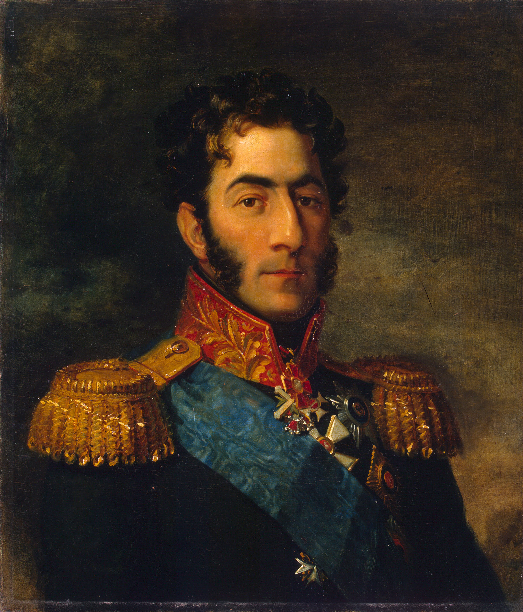
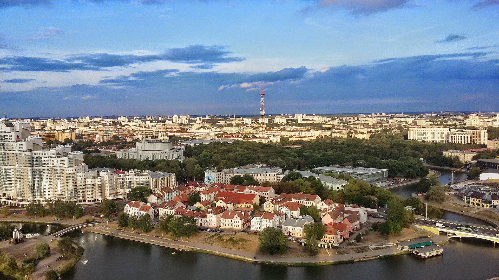

위기 일발 - 바그라티온의 탈출
게시: 2019-12-09T06:30:10+09:00
바클레이는 엉망진창이었던 러시아군 지휘 체계 안에서 그래도 거의 유일하게 냉정한 두뇌를 유지하고 있던 용의주도한 사람이었습니다. 6월 26일 허둥지둥 빌나 철수를 하는 와중에도 잔뜩 쌓인 군수품에 불을 질렀을 뿐만 아니라 저멀리 떨어져있던 고집불통 제2군 지휘관 바그라티온에게도 전령을 보내어 후퇴하여 자신의 제1군과 합류할 것을 '부탁'했습니다. 잠깐, '부탁'이라고요 ? 군대에서 군사작전을 벌이면서 '부탁'을 하는 경우가 있습니까 ? 어쨌든 바클레이는 그래야 했습니다. 이 어이없는 일은 모두 알렉산드르의 책임이었습니다. 알렉산드르가 바클레이를 총지휘관으로 임명하지 않았을 뿐만 아니라 짜르가 바그라티온으로부터 보고를 직접 받고 있었기 때문에, 가뜩이나 바클레이를 싫어하던 바그라티온은 바클레이를 자신의 상관으로 여기지 않고 있었습니다. 그런 바클레이가 아니나 다를까 어이없는 편지를 보내왔을 때 바그라티온은 지시에 따르기는 커녕 폭발했습니다. 프랑스군이 드디어 네만 강을 건너 신성한 러시아의 영토를 침공했다는데 날아온 편지 내용이 고작 '후퇴하라'라니 ! 바그라티온의 생각에 알렉산드르의 가장 큰 실책은 역시 바클레이에게 제1군을 맡겼다는 것이었습니다. 그루지아의 상남자 바그라티온에게는 오직 전진이 있을 뿐 후퇴란 있을 수 없었습니다.

(바그라티온과 함께 러시아군에서 복무하던 프랑스 망명귀족 랑제론에 따르면 바그라티온은 '시커멓고 못생긴 촌뜨기'였습니다.)
그런데 남자라면 굽힐 줄도 알아야 하는 법입니다. 초반의 분노가 김이 빠지자, 아무리 바그라티온이 고집불통이라고 해도 그 자리에 가만히 앉아있다가는 자신의 6만 정도 되는 제2군은 삽시간에 프랑스군에게 포위당해 압살당하기 딱 좋다는 것이 훤히 보였습니다. 나폴레옹의 공격은 역시 날카로왔습니다. 그는 이미 러시아 제1군과 제2군의 위치를 정확하게 파악하고 있었고, 네만 강을 건너자마자 바클레이와 바그라티온 사이에 프랑스군을 쐐기처럼 박아넣어 그 둘을 분리시켰던 것입니다. 병법의 기본인 각개격파를 시전하려 했던 것이지요. 바그라티온이 바클레이 보기를 뭣같이 본다고 해서 그가 무능한 지휘관이라는 뜻은 아니었습니다. 그는 나폴레옹의 의도를 눈치채고 곧 철수 준비를 시작했습니다. 바그라티온도 그동안 수비가 아니라 공격을 하겠다고 설치기는 했지만 당장은 공격할 준비도, 수비할 준비도 전혀 되어 있지 않았던 것은 마찬가지였습니다. 여기저기 장기 주둔을 위해 흩어져 있던 그의 제2군도 철수를 하려면 재집결하는 등 시간이 좀 필요했습니다. 하지만 나폴레옹의 그랑다르메가 그렇게 바그라티온이 짐을 쌀 시간을 충분히 줄 리가 없었습니다. 인생은 뜻하지 않은 놀라움의 연속이고 전쟁은 특히 그런 법입니다. 바그라티온은 나폴레옹이 빌나에 입성하던 6월 28일에야 철수를 시작할 수 있었는데, 그때까지 그랑다르메는 무슨 이유에서인지 제2군을 그대로 내버려두었습니다. 과연 전격적의 프랑스군이 맞나 싶을 정도였습니다. 바그라티온은 무척 의아스럽게 생각했으나 아무튼 다행이라고 여기고 바클레이의 제1군과 합류하기 위해 북북서로 방향을 잡고 후퇴를 시작했습니다. 그런데 곧 프랑스군이 그렇게 제2군을 내버려 두었던 이유가 밝혀지는 듯 했습니다. 철수를 시작한지 6일 후인 7월 4일, 바그라티온은 그의 앞 길을 가로막고 있는 프랑스군이 있다는 것을 알고 깜짝 놀랐습니다. 명성이 자자한 프랑스군의 명장 다부가 직접 거느리는 군단이었습니다. 나폴레옹은 바그라티온이 바클레이와 합류하기 위해 북북서로 움직일 것이라는 것을 어렵지 않게 예측하고 미리 거기에 다부를 보낸 것이었습니다. 결국 바그라티온은 나폴레옹의 손바닥 위에서 놀고 있었던 셈이지요. '그럼 그렇지, 이 모든 것이 함정이었어'라고 생각한 바그라티온은 서둘러 방향을 틀어 남서쪽의 민스크(Minsk)로 탈출을 시도했습니다.

(민스크의 전경입니다. 현재 민스크는 과거 우리가 백(白)러시아라고 부르던 벨라루스의 수도입니다만, 원래 폴란드-리투아니아 연방 소속의 작은 마을이었습니다. 이 마을은 폴란드와 러시아, 심지어 스웨덴 등이 번갈아가며 점령하다가 폴란드 왕국 소속으로 있었는데, 결국 1793년 제2차 폴란드 분할 때 러시아 영토가 됩니다. 민스크가 도시로 발전한 것은 19세기 중반 경부터였습니다.)
그런데 상남자 바그라티온조차 가슴이 덜컹 내려앉는 일이 발생했습니다. 다부를 피해 허둥지둥 남서쪽으로 방향을 휙 틀어 전속력으로 민스크를 향해 달렸는데, 정작 민스크 인근의 니에쉬비에즈(Nieshviezh)까지 와보니 그를 기다리는 것은 민스크를 이미 다부가 점령하고 있다는 놀라운 소식이었습니다 ! 과연 '축지법을 쓰시는 원수님'이라는 다부의 명성은 고스톱을 쳐서 딴 것이 아니었던 것입니다 ! 이제 바그라티온에게는 그의 뒤를 맹렬히 추격하는 그랑다르메의 대군과 앞을 가로 막은 다부의 군단 사이에서 박살이 나는 일만 남게 되었습니다. 바그라티온은 이를 악물었습니다. 하지만 정말 인생과 전쟁은 알 수 없는 것인가 봅니다. 다부에게 가로막혀 멈춰선 바그라티온의 뒤를 곧 따라잡을 줄 알았던 후방의 그랑다르메 대군이 신기하게도 나타나지 않고 있었던 것입니다. '과연 우리 뒤를 프랑스군이 추격하고 있는 것이 맞을까 ?' 싶을 정도의 속도였습니다. 바그라티온은 기회를 놓치는 무능한 지휘관이 아니었습니다. 결국 한참 뒤에야 근처의 미르(Mir)에서 그랑다르메 소속 폴란드 창기병들이 나타나서 러시아군의 카자흐 기병들과 교전했다는 소식이 들려올 때는 이미 바그라티온은 다시 더 남쪽으로 방향을 틀어 탈출한 뒤였습니다. 그랑다르메가 바그라티온을 손쉽게 요리할 수 있는 기회가 사라져 버린 것입니다. 이렇게 탈출에 성공한 바그라티온의 제2군은 스몰렌스크에서 바클레이와 합류할 수 있었고, 결국 이들은 보로디노 전투에서 제 몫을 톡톡히 해냅니다. 만약 이때 바그라티온과 그의 제2군이 민스크 앞에서 요격 궤멸되었다면, 어쩌면 나폴레옹의 1812년 러시아 침공 전체의 판도가 약간 바뀔 수도 있었을지 모릅니다. 이 모든 것이 바그라티온의 뒤를 추격하던 그랑다르메가 예전과 달리 꾸물거렸기 때문이었습니다. 기동력 하나로 온 유럽을 제패했던 그랑다르메에 대체 무슨 일이 벌어지고 있었던 것일까요 ? 분명히 바그라티온의 뒤를 추격하던 그랑다르메에는 문제가 있었습니다. 그리고 그 문제는 다름아닌 나폴레옹 본인이 만든 것이었습니다. 바로 그의 막내 동생 제롬이었습니다.
** PS : 최근에 제가 좀 바빠서 목요일의 잡상편은 이번주에는 못 올릴 것 같습니다. 그래도 다음주 월요일의 제롬 이야기는 어떻게든 올려보겠습니다. Source : 1812 Napoleon's Fatal March on Moscow by Adam Zamoyski